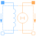
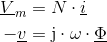
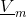
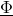
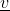
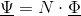
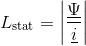
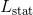
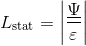
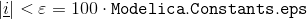

ElectroMagneticConverterElectro-magnetic energy conversion |

|
Information
This information is part of the Modelica Standard Library maintained by the Modelica Association.
The electro magnetic energy conversion is given by Ampere's law and Faraday's law respectively:
- 
In this equation  is the magnetomotive force that is supplied to the connected magnetic circuit,  is the magnetic flux through the associated branch of this magnetic circuit. The negative sign of the induced voltage  is due to Lenz's law.
The static inductance is calculated from the flux linkage
- 
and the current :
- 
This quantity is calculated for information only.
Note
 is set to
- 
if .
Parameters (1)
| N |
Value: 1 Type: Real Description: Number of turns |
|---|
Connectors (4)
| port_p |
Type: PositiveMagneticPort Description: Positive magnetic port |
|
|---|---|---|
| port_n |
Type: NegativeMagneticPort Description: Negative magnetic port |
|
| pin_p |
Type: PositivePin Description: Positive electric pin |
|
| pin_n |
Type: NegativePin Description: Negative electric pin |
Components (6)
| j |
Type: Complex |
|
|---|---|---|
| v |
Type: ComplexVoltage Description: Voltage |
|
| i |
Type: ComplexCurrent Description: Current |
|
| V_m |
Type: ComplexMagneticPotentialDifference Description: Magnetic potential difference |
|
| Phi |
Type: ComplexMagneticFlux Description: Magnetic flux coupled into magnetic circuit |
|
| Psi |
Type: ComplexMagneticFlux Description: Flux linkage for information only |
Used in Examples (2)
|
Modelica.Magnetic.QuasiStatic.FluxTubes.Examples Linear inductor with ferromagnetic core |
|
|
Modelica.Magnetic.QuasiStatic.FluxTubes.Examples Non linear inductor with ferromagnetic core |